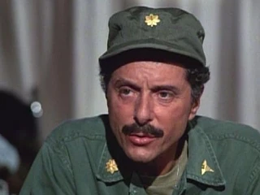

M*A*S*H in the Modern Era: Comedy, Trauma, and the 4077th
Trigger warning: this post includes references to racism and sexual assault.
I was born in 1991, eight years after 106 million people tuned in to watch the series finale of M*A*S*H. By conventional logic, a sitcom set during the Korean War, broadcast during the Vietnam War, and concluded during the Cold War should not resonate with a millennial audience. Yet my Mum loved it and kept reruns on whenever they aired. I missed most of it as a child; too much of the material depends on adult experience. I rewatched the series in my early twenties and have returned to it repeatedly since. What I found was not retro fluff, but one of television's sharpest studies of institutional burnout, medical ethics, and trauma.
If you browse discussions on platforms like r/mash, one point keeps resurfacing: the show still lands. We now have mainstream language for moral injury, PTSD, and systemic burnout. M*A*S*H anticipated those ideas decades early, then built an eleven-year narrative around them, smuggling anti-authoritarian argument beneath martini jokes and Groucho Marx impressions.
The premise, drafted surgeons trying to save lives in a meat grinder they did not create and cannot stop, forces the characters to use humor as armor against collapse. Hawkeye Pierce is at once a wisecracking doctor and a man fending off breakdown through sheer wit.
Quick jargon guide
- M*A*S*H: Mobile Army Surgical Hospital. The real-life medical units deployed near the front lines in Korea to provide rapid trauma care.
- Meatball Surgery: Brutal, rapid triage surgery designed not to perfect a patient, but to keep them alive long enough for evacuation to a safer hospital.
- Section 8: A military discharge based on mental unfitness for service. Corporal Klinger spends the first several seasons trying to secure one by wearing women's clothing.
- The Laugh Track: CBS mandated a laugh track against the creators' wishes. Most streaming and DVD versions let you turn it off, which exposes the show's darker dramedy.
The Real 4077th
The 4077th is fictional, but the institution behind it was not. Mobile Army Surgical Hospitals were a genuine innovation of the Korean War: fully staffed surgical units placed close enough to the front that a wounded soldier could be on an operating table within hours rather than days. The result was one of the largest single-conflict drops in battlefield mortality in modern military history. A casualty who reached a MASH unit alive had better than a ninety-seven percent chance of walking out of it. The helicopters that bookend so many episodes, ferrying the wounded in on external litters, were the actual reason those survival numbers improved.
What the show gets right is that this efficiency was built on top of exhaustion. The same surgeons who produced those numbers were working impossible hours, improvising around shortages, and operating on teenagers who should have been at home. The competence and the horror were bundled together. They were the same thing seen from two angles.

Image source: Wikimedia Commons. License details are listed on the file page.
The Show That Broke Its Own Rules
For a network sitcom in 1975, M*A*S*H did something close to unthinkable. At the end of the third season, Henry Blake finally gets his discharge, says his goodbyes, and boards a plane home. In the closing scene, Radar walks into the operating room, voice flat, and reads out that the plane was shot down over the Sea of Japan. There were no survivors. No laugh track, no reprieve, no last-minute rescue. The shock on the cast's faces is partly real: the actors were handed the revised pages just before the cameras rolled.
It was a deliberate refusal of the bargain sitcoms usually make with their audience, the unspoken promise that nobody who matters ever truly gets hurt. Letters of complaint poured in. The writers did it anyway, because the entire premise of the show is that war does not respect narrative convenience. People you have spent three years loving can be alive in one scene and gone before the credits, for no reason that resolves anything.
The series kept experimenting. "The Interview," shot in black and white as a faux wartime documentary with the cast improvising in character, is one of the finest half-hours the medium has produced. Another episode plays out in near real time against a ticking clock; another is told from the point of view of a wounded soldier staring at the ceiling while the camera never leaves his eyeline. They might sound gimmicky but they were evidence of the show's willingness to push the boundaries of what a comedy could achieve.
A Korean War Show About Vietnam
M*A*S*H is set in Korea between 1950 and 1953, but it was written and broadcast by people watching Vietnam unfold on the evening news. The choice of setting was protective camouflage, as a show openly critical of an ongoing war would have been smothered by the network and its sponsors.
The doctors are drafted, not enlisted, and they resent it, even as they work with people in the complete opposite mindset, willful signees who embrace the military culture. The enemy is rarely a person; it is bureaucracy, brass chasing medals, and supply officers more interested in making a quick buck than doing the right thing. The show's sympathy is reserved for the wounded on both sides, and it is pointedly uninterested in the 'politics'. That refusal to salute a flag was radical for its moment, and it is a central reason the series has aged better than most work made beside it. The show was never really about Korea, and only partly about Vietnam, it was instead mostly about what institutions do to the people they conscript, and the unethical invasions of smaller countries by imperialist powers, and how war hurts everyone involved: innocent kids sent to war, and families shelled for no reason they have ever been told of.
The Evolution of the Antagonist
The most modern aspect of M*A*S*H is how it handled antagonists over time. In the early seasons, the primary foil for Hawkeye and Trapper is Major Frank Burns. Frank is a cartoon: a jingoistic, hypocritical, incompetent surgeon who follows authority without thought. He is easy to mock, and for the first few seasons that mockery is entertaining - he's an easy scapegoat for antics and shenanigans, and allows the main characters to shine without feeling shame for less the savory antics: after all, ferret-face deserves it!.

Image source: Wikimedia Commons. License details are listed on the file page.
But cartoon villains cannot sustain a decade of storytelling. When Frank leaves, he is replaced by Major Charles Emerson Winchester III. Winchester is everything Frank is not: wealthy, educated, fiercely intelligent, and an exceptional surgeon besides. Hawkeye and B.J. cannot dismiss him as a fool, so the conflict shifts to class, elitism, and resentment of the draft. By giving them a foil they had to respect, the show matured. Winchester then undergoes real growth, eventually confronting the war's trauma in ways that strip away his Boston Brahmin veneer.
The Melancholy Undercurrent
The theme song of M*A*S*H, "Suicide Is Painless," is bleak. I recently picked up my guitar and worked through the tabs; stripped down, the tune exposes the minor-key melancholy that underpins the show. The series never lets you forget the cost of conflict. Characters die. Patients die. The war appears endless.
Through early morning fog I see
Visions of the things to be
The pains that are withheld for me
I realize and I can seeThat suicide is painless
It brings on many changes
And I can take or leave it if I please
In an era shaped by institutional distrust and burnout among medical professionals and essential workers, M*A*S*H reads as current rather than dated. Its argument is blunt: when institutions fail or turn absurd, the only sane response is disciplined competence in the work at hand and stubborn loyalty to the people enduring the same strain.

Image source: Wikimedia Commons. License details are listed on the file page.
The Flaws and the Credit
I love this show, yet the first four seasons are hard to watch, with the Henry Blake outro the obvious exception. The problem is not the dated production or the broad comedy; it is that many of the early "jokes" are not really jokes at all. I would rather face that head-on than excuse it, because M*A*S*H is best understood as two things at once: a product of its time that gets plenty wrong, and a series that grew visibly more humane and more progressive as it ran. Naming the ugly parts plainly is what lets you measure how far it travelled, and how much it got right by the end.
The nicknames
Start with the names. "Spear-chucker" is a name given to the only black surgeon, and is indefensible. If the point (as told in the series) was really due to "he played football", then quarterback or passer would have done the job; the writers reached for a slur instead, and the character is written out quickly enough to suggest they knew it. "Hawkeye" is gentler, taken from a favourite novel, though you can fairly argue it lifts from Native American culture without much thought. "Hot Lips" belittles a senior officer: realistic for the period, but it sexualizes Margaret and erases the skill she keeps demonstrating, and her objection to being denied her rank is laughed off every time she raises it. Sparky and Radar, by contrast, are harmless, and Radar's name suits his character perfectly.

Image source: Wikimedia Commons. License details are listed on the file page.
The writing and production teams turned over heavily between seasons one and four, with Alan Alda gaining more influence over the show's direction. The result is not political correctness so much as basic respect, and from season four onward the improvement is large enough that the show goes from painful to heartwarming.
None of this stops me loving it. M*A*S*H is a nostalgic treasure. Loving it means accepting it as a relic, and treating the distance between then and now as the lesson rather than an embarrassment. It also means giving the show its due, because for its era it was a genuine progressive force, and that deserves saying just as loudly as the criticism.
Race
The series gave its characters love interests across racial lines, refreshing for the time, and it repeatedly held racism up to be mocked and dismantled. The "wrong blood" episode, in which Frank's bigotry collides with a transfusion, is a very on-the-nose critique of prejudice. It's a bit stumbling, and the message is delivered with a heavy hand by reflecting the racism of the patient back to him, is clumsy, but the intent is clear and commendable for the era.
Cross-dressing
Klinger is kind of fascinating, because he started off as a comedic device (as cross-dressing was considered a hilarious concept at the time) but eventually the "joke" petered out and instead he was just a dude who liked to dress in evening gowns. He normalized the sight of a man in a dress. The camp clearly enjoyed his wardrobe, with Blake, Hawkeye, B.J., Trapper, and even Radar and Potter complimenting his latest creations. Eventually it's just part of who he is, and the humor comes from his antics rather than the fact that he's wearing a dress.

Image source: Wikimedia Commons. License details are listed on the file page.
Gay rights and the episode "George"
If one episode proves the show's nerve, it is season two's "George." In 1974, when television still treated gay characters as punchlines or pathologies, M*A*S*H staged institutional homophobia in plain view. A wounded private confides in Hawkeye that he is gay. Frank Burns reacts exactly as the era expected: he tries to report George and trigger a dishonorable discharge that would stain the rest of the man's life.
Hawkeye and Trapper protect George: they do not try to redeem Frank with sermonizing; they corner him with leverage and force silence. When institutional rules are unjust, decency requires defiance. What a wonderful lesson.
Feminism
The show's gender politics are split between real damage and real growth. In early seasons, nurses are treated as prey, "no" is played as a joke, and some plots cross straight into coercion and assault framing that should be condemned without hedging. Against that background, Margaret "Hot Lips" Houlihan becomes one of the strongest arcs in the series and a clear marker of how the writing changed from the 70s to the 80s. Early scripts flatten her into a caricature and a target for misogynistic pranks; later seasons give her authority, depth, and earned respect. She becomes a fierce defender of her nurses and a senior officer who insists on being treated as one, while carrying the loneliness of choosing career over convention inside a patriarchal institution. The episode with the dying stray dog remains my favorite (god I can feel tears thinking about the episode, I so, so emphathize with Margaret in this episode). Margaret sits vigil, drops the armor, and shows a precise, unsentimental compassion that exposes the person beneath the "Iron Maiden" label.

Image source: Wikimedia Commons. License details are listed on the file page.
Religion and Father Mulcahy
Surrounded by death and cynicism, Father Francis Mulcahy embodies practical grace. He is kind without sentimentality and brave without performance: he walks into danger to retrieve wounded soldiers, then spends his spare hours hunting food and supplies for the orphanage. His ecumenism feels like a novel trait for a religious figure on TV. He helps run services beyond his own denomination and treats belief and disbelief with equal respect. For a network sitcom of that period, M*A*S*H was unusually frank about atheism and agnosticism, and it let believers and non-believers fail and excel alike. Morality is measured by conduct, not by creed.
Image source: M*A*S*H Wiki (Fandom). License details are listed on the file page.
Psychology and therapy
The arrival of Dr. Sidney Freedman injected a severe, emotionally literate clarity into a program otherwise saturated with the frantic absurdities of war. His scenes rank among the finest the series produced, because they advance a radical proposition. In an environment where characters routinely succumb to the mammalian reflex of self-medicating with alcohol, Freedman's interventions shatter the illusion that chemical oblivion can serve as a sustainable defense. He demands an acknowledgment that the only rational response to systematic psychological devastation is formal treatment. When paralyzing nightmares finally break Hawkeye's emotional defenses, he abandons his habitual coping strategies: he refuses to posture for his peers, declines to deflect the horror with cheap cynicism, and rejects the temptation to drink his anguish into silence and demands medical intervention instead. By focusing on that surrender to therapy, the show enforces the equivalence of physical and psychological trauma. A shattered mind demands the same urgent triage as a shattered limb, and M*A*S*H treats mental injury as injury. Beautiful.

Image source: M*A*S*H Wiki (Fandom). License details are listed on the file page.
Ableism and disability
A military hospital is the right place to argue about disability, because war manufactures it by the truckload. M*A*S*H made that argument decades before "ableism" entered common use, and it denied the era's reflex to treat a damaged body as a tragedy to be pitied. The show kept insisting that a person's worth survives the loss of a limb or a faculty.
Season eight's "Morale Victory" makes the case nicely. Winchester saves a soldier's leg but cannot stop nerve damage to his right hand, then learns the man is a concert pianist who now believes his life is over. Winchester, who loves music and knows he himself lacks the gift to play it well, refuses to let him grieve himself into nothing. He tracks down Ravel's Concerto for the Left Hand, written for a pianist who lost his right arm in the First World War, and forces the younger man to see that the talent lives in his head, not in his fingers. I wept.
"End Run" from season five works the same wound from a different angle. Sergeant Billy Tyler, a college footballer, loses a leg and the future he had pinned entirely on his body. The episode sits in the mourning rather than reaching for a cure or a slogan, and the camp, Radar especially, helps him separate his value as a man from his value as an athlete. It is a sharp rebuke to a culture that worships able bodies and discards them the moment they break.
"Dear Uncle Abdul," also season eight, turns from the physical to the systemic. Eddie, a soldier with an obvious intellectual disability, has been drafted to the front, and the doctors are appalled. The story is a direct hit on Project 100,000, the real Vietnam-era scheme that lowered mental and physical standards to feed more men into the war and sent disproportionately poor and disabled recruits to die. Eddie saves his wounded friend and proves his courage, yet the show keeps its aim fixed on a government that treated such men as expendable.
The series confronts sexism, racism, class privilege, disability and more. Its early seasons carry clear stains, but those stains are part of the record of growth. I watch M*A*S*H as history, argument, and companion: flawed at points, brave at others, and still worth returning to because it shows how people survive broken institutions without surrendering their humanity, which I think many of us can learn from.
Abyssinia,
Ken
P.S., if you're now in a MASH mood, check out this wonderful MASH ambience video I stumbled upon:
Common questions for modern viewers
Does the laugh track ruin it today?
It can feel jarring. The creators hated the laugh track and fought to keep it out of operating room scenes. If you have the DVDs or a custom media server setup, disable it. The show shifts from sitcom toward medical dramedy with far more weight.
When does the show "get good"?
The first three seasons still have humor and some interesting moments, but they are products of their time. The tonal shift toward a more serious and philosophical register begins in Season 4 with B.J. Hunnicutt and Colonel Sherman Potter, then solidifies in Season 6 with Winchester. If the early episodes feel too slapstick, start at Season 4.
How does the finale hold up?
"Goodbye, Farewell and Amen" remains a masterpiece. It rejects neat wrap-ups, confronts the psychological toll borne by Hawkeye, and ends on the bittersweet fact that found families still break apart. 10/10.